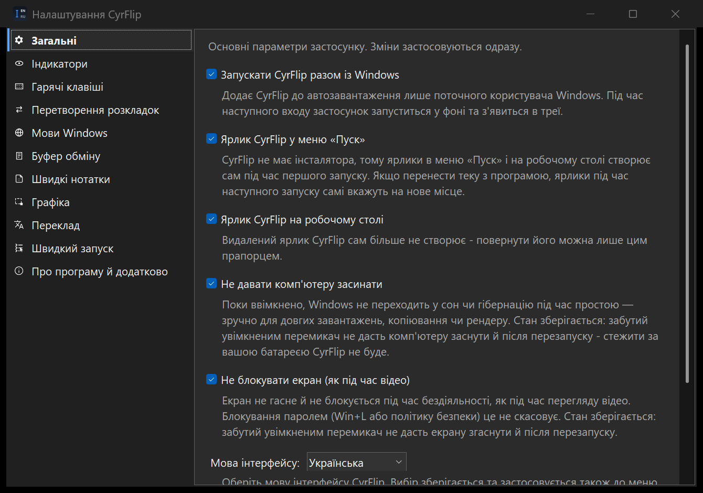
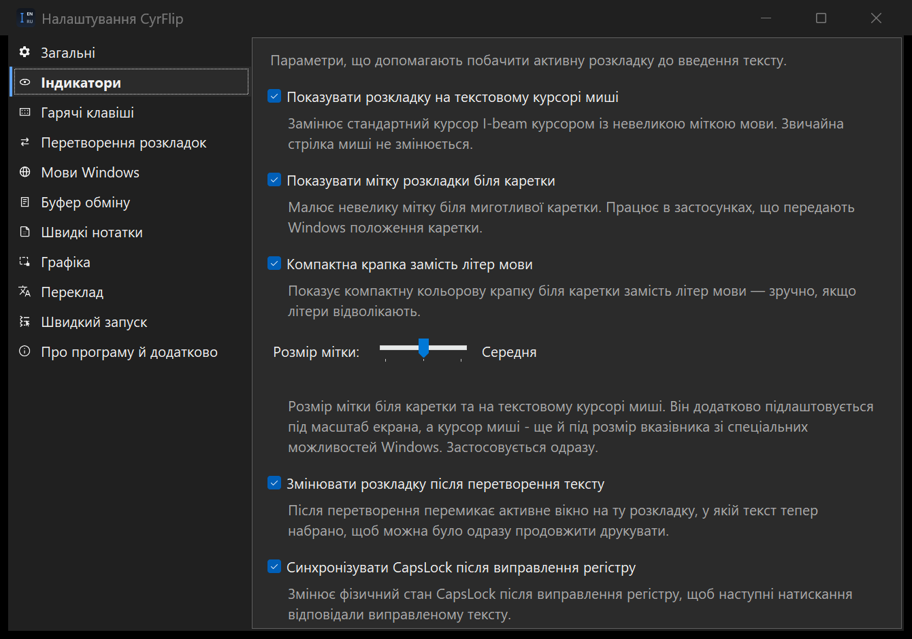
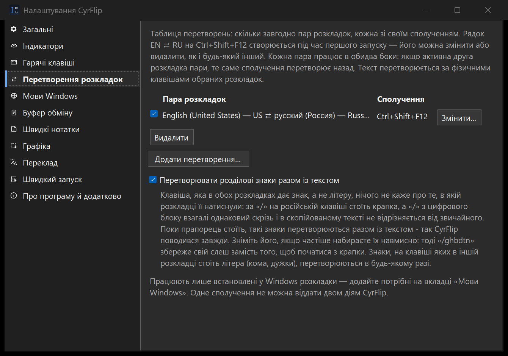

Застосунок CyrFlip працює самостійно — ставить маркер розкладки на системний курсор і поруч із кареткою в будь-якому застосунку, транслітерує текст однією гарячою клавішею. Якщо ви використовуєте VS Code — необов'язкове розширення для VS Code додає той самий маркер точно біля каретки редактора Monaco. Нижче описано, як їх налаштувати.
Застосунок - це «мозок»: він знає активну розкладку. Розширення - лише поверхня для відображення в VS Code, бо VS Code малює власну каретку й не поспішає повідомляти її місцезнаходження зовнішньому світу.
CyrFlip.exe (трей) %LOCALAPPDATA%\CyrFlip\ Розширення VS Code
визначає розкладку ──пише──▶ layout.txt ──стежить──▶ малює маркер
біля каретки редактораЗастосунок має бути запущений, інакше розширенню нема що показувати - воно лише читає те, що публікує застосунок. Без VS Code ви все одно отримуєте значок у треї, маркер на курсорі миші та гарячу клавішу транслітерації всюди.

Будь-який із варіантів:
winget install SerZhyAle.CyrFlip%LOCALAPPDATA%\Programs\CyrFlip,
та запустіть CyrFlip.exe. Встановлювати нічого не треба; працює на «голій» Windows 10/11. ZIP не має цифрового підпису, тому Windows або антивірус можуть попередити - що це означає і що натиснути.Після запуску CyrFlip сидить у системному треї (без вікна). Значок показує активну розкладку. Правий клік відкриває історію буфера, її увімкнення та паузу, перемикачі індикатора й Налаштування. У налаштуваннях є гарячі клавіші, автозапуск, приватність і діагностика.
Увімкніть Start with Windows, щоб застосунок - а отже й маркер розкладки всюди, включно з VS Code - був доступний одразу після перезавантаження.
Історія буфера вимкнена, доки ви не ввімкнете її в меню трея. Вона зберігає недавні Unicode-тексти у невеликому вікні поверх інших. Клацніть запис, щоб використати його; важливі записи можна закріпити, а непотрібні видалити. Ctrl+Shift+F10 показує або ховає вікно.
Історія зберігається лише локально та захищена Windows DPAPI для вашого облікового запису. Захоплення можна призупинити, очистити історію або повністю вимкнути функцію в треї чи налаштуваннях.
Правий клік по значку в треї та Налаштування... (або подвійний клік по значку). Будь-яка зміна застосовується одразу - нічого перезапускати чи зберігати не треба.
| Вкладка | Що там є |
|---|---|
| Загальні | Запуск разом із Windows; не давати комп'ютеру засинати та не блокувати екран (обидва запам'ятовуються - забутий увімкненим перемикач не дасть комп'ютеру заснути й після перезапуску, стежити за вашою батареєю CyrFlip не буде); мова інтерфейсу - 13 на вибір; тема - як у Windows (типово), світла або темна. Усі вікна, діалоги й меню перемикаються одразу, а «як у Windows» іде слідом за Windows, поки CyrFlip працює; контрастна тема Windows завжди важливіша. Мітка розкладки в будь-якій темі зберігає свої кольори - вони позначають розкладку. |
| Індикатори | Маркер на курсорі миші (типово вимкнений), маркер біля каретки (увімкнений), компактна крапка замість літер, змінювати розкладку після перетворення тексту та синхронізувати CapsLock після виправлення регістру. |
| Гарячі клавіші | Загальний вимикач плюс окремі вимикач і сполучення для виправлення регістру та менеджера буфера - можна лишити тільки потрібне. Там само поступатися хоткеями віддаленому робочому столу: поки у фокусі вікно mstsc/msrdc, сполучення йде у віддалений сеанс - саме це потрібно, коли CyrFlip запущено на обох кінцях RDP. Тут само живе контекстне меню: його вимикач і акорд миші, що його відкриває. |
| Перетворення розкладок | Одна таблиця, де зібрані всі сполучення, що перетворюють текст між розкладками. Рядок EN ⇄ RU на Ctrl+Shift+F12 створюється під час першого запуску, його можна змінити або видалити, як і будь-який інший; пар можна додати скільки завгодно, кожна зі своїм сполученням і своїм вимикачем. |
| Мови Windows | Налаштування введення самої Windows, без відкриття її панелі: встановлення, порядок і видалення розкладок (нічого не завантажується - розкладки вже входять до складу Windows), сполучення перебору (Alt+Shift, Ctrl+Shift, ` або вимкнено) та прямі сполучення на мову, які обробляє сама Windows, тому вони працюють і при закритому CyrFlip - і, на відміну від штатного вікна Windows, тут не лише Ctrl+Shift+цифра. Обидва розділи один раз зберігають стан «до CyrFlip» і вміють його повернути. |
| Буфер обміну | Увімкнення історії, пауза захоплення, чи показувати вікно менеджера під час запуску, його прозорість, пошук по всій історії та повне очищення. |
| Переклад | Вимикач перекладу виділеного тексту (типово вимкнений), адреса сервера Ollama та модель, кнопки «Встановити Ollama», «Запустити Ollama», «Перевірити зв'язок» і «Завантажити модель», таблиця напрямків перекладу — кожен рядок зі своїм сполученням — і що робити з результатом: покласти в буфер обміну чи одразу вставити замість виділення. |
| Швидкий запуск | Необов'язковий лаунчер сценаріїв — див. розділ нижче. |
| Швидкі нотатки | Необов'язковий локальний блокнот — див. розділ нижче. |
| Про програму | Версія збірки (той самий штамп YY.M.D.HHmm, що й у релізного ZIP, - одразу видно, чи ввійшло виправлення до вашої копії; збірка з Microsoft Store повідомляє про це окремо), посилання, звіт діагностики положення каретки та Надіслати логи автору.. - збирає логи CyrFlip в один архів і відкриває лист, який надсилаєте ви самі. |
Зміна в «Мовах Windows» зазвичай діє одразу, але іноді Windows остаточно приймає її лише після виходу та повторного входу. Версія з Microsoft Store працює в контейнері, тому Windows може перенаправити такі записи в реєстр усередину пакета - вкладка попереджає про це й дає посилання на налаштування Windows.
Необов'язковий модуль, що увібрав у себе OneClickRunner, — один процес у треї замість двох. За замовчуванням вимкнений: доки не ввімкнете його в «Налаштування → Швидкий запуск», CyrFlip поводиться точно як раніше — ні зайвого пункту в треї, ні завдань у Jump List.
yt-dlp має бути
в PATH). У таблиці налаштувань їх можна додавати, змінювати, клонувати, сортувати, шукати,
експортувати та імпортувати.%APPDATA%\CyrFlip\Scenarios,
формат сумісний з OneClickRunner. Вимкнення модуля очищає трей і Jump List, але файли залишаються до
наступного ввімкнення.%APPDATA%\OneClickRunner\Scenarios); вихідні файли ніколи не змінюються,
а кнопка «Імпорт з OneClickRunner...» повторює перенесення будь-коли. .ps1 запускаються через
PowerShell з разовим -ExecutionPolicy Bypass, .bat/.cmd — через
cmd.exe; права адміністратора запитуються лише у сценаріїв з відповідною позначкою.Виділіть текст у будь-якому застосунку Windows, натисніть своє сполучення — і переклад з'явиться в невеликому вікні біля вказівника миші, дописуючись у міру того, як модель його пише. Працює через Ollama — безкоштовну програму, яку ви один раз встановлюєте на власний комп'ютер; CyrFlip її не містить, не має ні облікового запису, ні ключа. За замовчуванням модуль вимкнений: доки ви не ввімкнете його в «Налаштування → Переклад», жодне сполучення не зайняте, у треї нічого не додається, і CyrFlip не відкриває жодного мережевого з'єднання.
http://localhost:11434, тобто ваш власний комп'ютер, і текст його не залишає; вкладка
прямо попереджає, що інша адреса означає надсилання виділеного тексту на той комп'ютер. Розробникові
чи в якусь хмарну службу не надсилається нічого.aya-expanse:8b
(~4,7 ГБ, типова - найкращий переклад із перевірених) та gemma2:9b (~5 ГБ). Моделі
менші за 4 ГБ перевірки українською та російською не пройшли, тож gemma2:2b
(~1,5 ГБ) лишається лише для машин, де мало місця, і помилятиметься. Пам'ять під
модель тримає процес Ollama, а не CyrFlip — сам застосунок лишається в межах свого бюджету 50 МБ.
У версії з Microsoft Store кнопка встановлення лише відкриває ollama.com: застосунок зі Store не має
завантажувати й запускати сторонній інсталятор.Чесно про обмеження: якість перекладу - це якість локальної моделі; перший переклад після холодного старту триває довше, бо модель спершу має завантажитися в пам'ять; сама Ollama разом із моделлю - це кілька гігабайтів, які ви завантажуєте один раз. З довгого виділення перекладаються перші 4000 символів, і вікно про це повідомляє.
Усе, що CyrFlip уміє робити з виділенням, живе за гарячою клавішею. Цей модуль кладе ті самі команди на мишу: утримуйте Ctrl і клацніть правою кнопкою по виділенню — біля вказівника відкриється власне меню CyrFlip: «Копіювати / Вирізати / Вставити», далі ваші перетворення розкладок, виправлення регістру та рядки перекладу, далі «Швидкий запуск» і історія буфера, далі налаштування. Типово модуль вимкнений, і доки він вимкнений, мишачий хук узагалі не встановлюється: хук, що стоїть на шляху кожного руху миші в системі, не має існувати заради функції, якої ніхто не вмикав.
Модуль не читає текст і нічого не зберігає. Він стежить за своїм сполученням і, доки меню відкрите, за клацанням повз нього: меню, що належить фоновому процесу, не отримує клацання, яке має його закрити, тому CyrFlip закриває його сам.
Маленький локальний блокнот для того, що хочеться зберегти просто зараз і знайти потім. Натиснули Ctrl+Alt+N, набрали або вставили, закрили вікно. Типово вимкнено; доки вимкнено, CyrFlip не читає і не створює файл нотаток, у треї немає пункту нотаток і сполучення не призначене.
.txt чи
.md, вивантажити всі нотатки в один Markdown-файл або «Копіювати для Google
Keep» — текст іде в буфер обміну, а CyrFlip пропонує відкрити Keep, де ви його вставляєте.Нотатки зберігаються лише на вашому комп'ютері, у файлі лише на дозапис, де кожен запис зашифрований Windows DPAPI для вашого облікового запису — і ім'я, і текст. Нічого не йде в мережу, нічого не індексується пошуком Windows, історія буфера сама по собі на нотатки не перетворюється, а до архіву «Надіслати логи автору..» файл не потрапляє ніколи. Це все ж не сховище секретів: не зберігайте там паролі, бойові токени та приватні ключі. Експортований файл уже не зашифрований, і експорт каже про це прямо.
Перенесення до Google Keep — ручне, через буфер обміну, і це чесна межа, а не спрощення: Keep API у Google — інтерфейс для адміністратора Workspace, а не те, чим може користуватися особистий обліковий запис, тому CyrFlip не вдає синхронізацію.
Інтерфейс доступний англійською, російською, українською, а також Deutsch, Italiano, Español, Français, Português, العربية, हिन्दी, বাংলা, اردو та 中文. Під час першого запуску береться мова інтерфейсу Windows, інакше English; для арабської та урду інтерфейс дзеркалиться справа наліво. Переклади мовами, якими автор не володіє, зроблені моделлю й не вичитані - виправлення вітаються на GitHub.

Розширення для VS Code не є обов'язковим для роботи застосунку. Якщо ви не користуєтеся VS Code - пропустіть цей крок. Встановлюйте його лише якщо хочете маркер точно біля каретки всередині VS Code. Оберіть один спосіб:
.vsix - візьміть
cyrflip-vscode-<версія>.vsix з теки
vscode-extension,
потім у VS Code: Extensions ▸ ⋯ ▸ Install from VSIX.., або з термінала:
code --install-extension cyrflip-vscode-<версія>.vsixПісля встановлення виконайте Developer: Reload Window (Ctrl+Shift+P). Розширення запускається саме - налаштування не потрібне.

EN/RU/UK слідує за кареткою, а в рядку стану
видно ⌨ EN, ⌨ DE, ⌨ ZH - залежно від активної.ПРИВІТ замість «Привіт»?
Виділіть і натисніть Ctrl+Shift+F11 -
CyrFlip поміняє ВЕЛИКІ ↔ малі літери на місці. Ця функція має власну налаштовувану гарячу
клавішу, а необов'язковий перемикач Синхронізувати CapsLock після виправлення
регістру ще й приведе саму клавішу у відповідність до виправленого тексту -
вимкне, якщо текст закінчується малою літерою, і ввімкне, якщо великою, - щоб ви друкували
далі саме так, як тепер написано.Коли CapsLock увімкнено, навколо маркера
EN/RU/UK з'являється тонка рамка - на курсорі миші, біля каретки
та на значку в треї, щоб стан CapsLock було видно прямо там, де ви друкуєте.
Літери називають мову: US і Dvorak однаково читаються як EN, бо у значку завширшки кілька пікселів немає місця для «US-International». Колір називає розкладку: кожна з 25 розкладок 13 курованих мов має власний відтінок кольору своєї мови, тож російська завжди червона, але «Російська друкарська» - інший червоний. У компактному режимі крапки цей колір і є весь маркер.
Будь-яка інша розкладка - польська клавіатура, японський IME - зберігає літери своєї мови (PL, JA, TR) і отримує один нейтральний колір: роздати розрізнювані впізнавані кольори всім ~218 розкладкам Windows чесно неможливо.
| Мова | Маркер | Розкладка клавіатури | Колір |
|---|---|---|---|
| Англійська | EN | US 00000409 | #4DA3FF |
EN | US-International 00020409 | #0A58FF | |
EN | US-Dvorak 00010409 | #C2E3F4 | |
| Китайська | ZH | Chinese (Simplified) - US keyboard 00000804 | #F3B33D |
ZH | Chinese (Traditional) - US keyboard 00000404 | #FAEAA7 | |
| Гінді | HI | Devanagari - INSCRIPT 00000439 | #E68742 |
HI | Hindi Traditional 00010439 | #F0B88F | |
| Іспанська | ES | Spanish 0000040A | #F06E9C |
ES | Latin American 0000080A | #E92D8F | |
| Французька | FR | French 0000040C | #8D7CF2 |
FR | Canadian French 00001009 | #633BEC | |
| Арабська | AR | Arabic (101) 00000401 | #35C6B4 |
AR | Arabic (102) AZERTY 00020401 | #8BE0C7 | |
| Бенгальська | BN | Bangla - INSCRIPT 00000445 | #C67CDA |
| Португальська | PT | Portuguese (Brazil ABNT) 00000416 | #46B978 |
PT | Portuguese 00000816 | #96C0A1 | |
| Російська | RU | Russian 00000419 | #FF5A5A |
RU | Russian (Typewriter) 00010419 | #FF1313 | |
| Урду | UR | Urdu 00000420 | #E5A3C7 |
| Німецька | DE | German 00000407 | #D8D14A |
DE | German (IBM) 00010407 | #CED4A5 | |
| Італійська | IT | Italian 00000410 | #7FB2E5 |
IT | Italian (142) 00010410 | #6587B7 | |
| Українська | UK | Ukrainian 00000422 | #5AD86A |
UK | Ukrainian (Enhanced) 00020422 | #3FD039 | |
| усе інше | PL, JA, TR .. | будь-яка інша розкладка Windows | #9AA6B2 |
Маркер поруч із кареткою та біля курсора миші малюється напівпрозорим, тож текст під ним лишається читабельним; значок у треї та сам курсор I-beam лишаються непрозорими. Ті самі кольори використовує розширення для VS Code, тож розкладка виглядає в редакторі так само, як і всюди.
| Поверхня | Хто показує | Де |
|---|---|---|
| Текстовий курсор миші (I-beam) | Застосунок | Усюди, де можна друкувати |
| Маркер поруч із кареткою | Застосунок | Класичні Win32 / UI-Automation поля |
| Маркер біля каретки редактора | Розширення | Редактори коду VS Code (точно) |
| Індикатор у рядку стану | Розширення | VS Code, у всьому вікні |
| Значок у треї | Застосунок | Завжди, в області сповіщень |
Усередині VS Code webview-панелі та віджети - вбудований термінал, поля пошуку, панелі чату, палітра команд - не можуть містити декорації редактора, тому маркер біля каретки там не з'являється. Розкладку все одно показують індикатор у рядку стану та маркер на курсорі миші - а також власний маркер застосунку біля каретки, який у цих панелях якраз працює.
Двох маркерів одночасно не буває: доки ви працюєте в редакторі, маркер малює розширення,
а застосунок прибирає свій. Розширення повідомляє про це файлом поруч із layout.txt, і ознака
живе 5 секунд після останнього введення чи клацання в редакторі - тому в чаті, терміналі та полях пошуку
маркер застосунку повертається. Якщо застосунок запущено без розширення, нічого не змінюється.
%LOCALAPPDATA%\CyrFlip\layout.txt;
Microsoft Store → %LOCALAPPDATA%\Packages\SZA.CyrFlip_fdk7e19xt9z9j\LocalCache\Local\CyrFlip\layout.txt (у старіших версіях зі Store: %ProgramData%\CyrFlip\layout.txt). Застосунок видаляє файл під час виходу, тож відсутність файлу означає, що CyrFlip не запущений.
Індикатор у рядку стану - найшвидший спосіб переконатися, що розширення читає файл. Спробуйте
Developer: Reload Window.